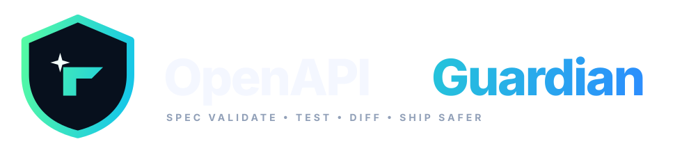

✓
Contract testing
Generate requests from your OpenAPI operations, call the running API, and validate documented responses.

TypeScript-first OpenAPI contract testing and semantic breaking-change detection for modern API teams.
Guardian turns your OpenAPI document into an executable contract and gives your CI pipeline a clear signal when an API drifts.
Generate requests from your OpenAPI operations, call the running API, and validate documented responses.
Compare API versions by meaning—not YAML line changes—and classify compatibility-impacting changes.
Use deterministic exit codes and machine-readable output to make contract checks part of your development pipeline.
The CLI is only the interface. Guardian is structured around a reusable core so the same contract engine can power local development, CI, and future integrations.
The roadmap includes deeper JSON Schema validation, richer test generation, negative testing, fuzzing, and native GitHub workflows—without turning the tool into another API client.
Guardian is intentionally early-stage: transparent about its current scope, with a foundation built for serious developer tooling.
Fork the repository, open an issue, or send a pull request. Contributions are welcome.